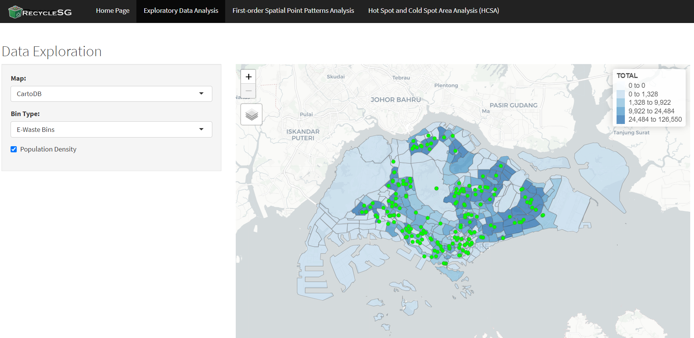
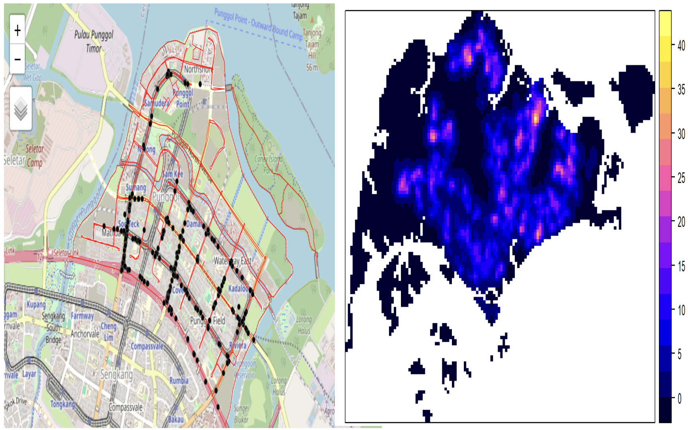
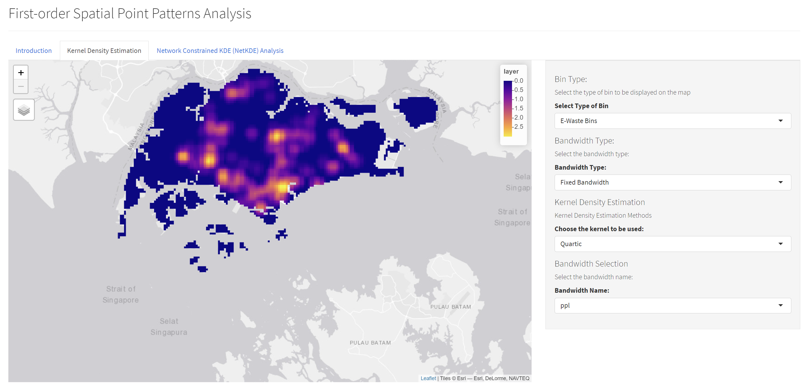
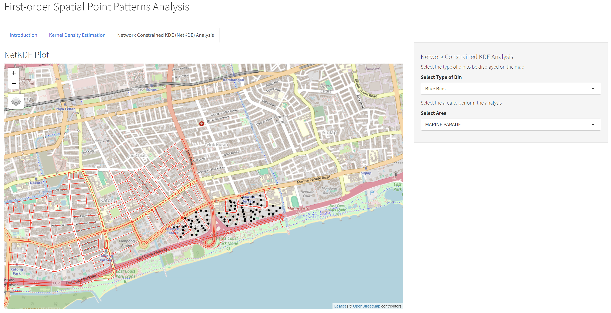
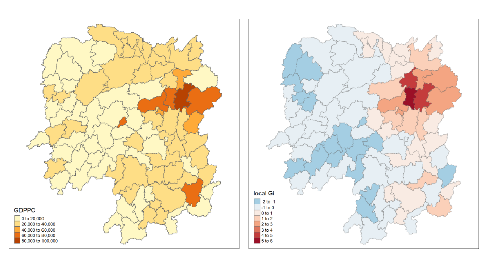
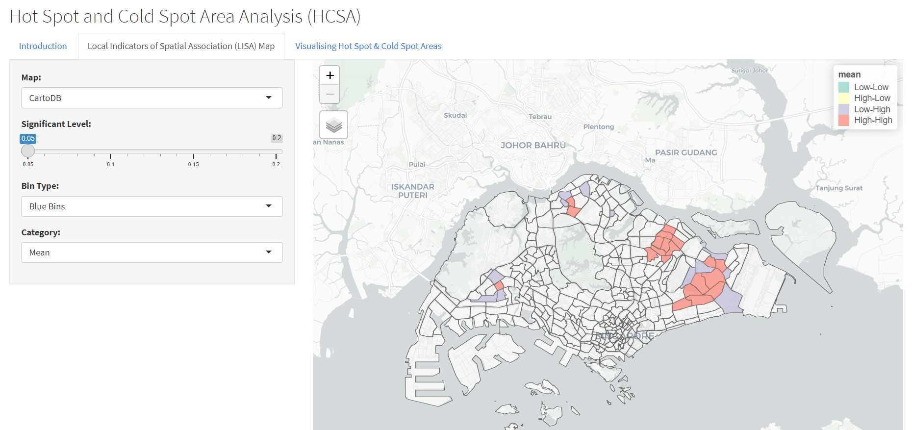
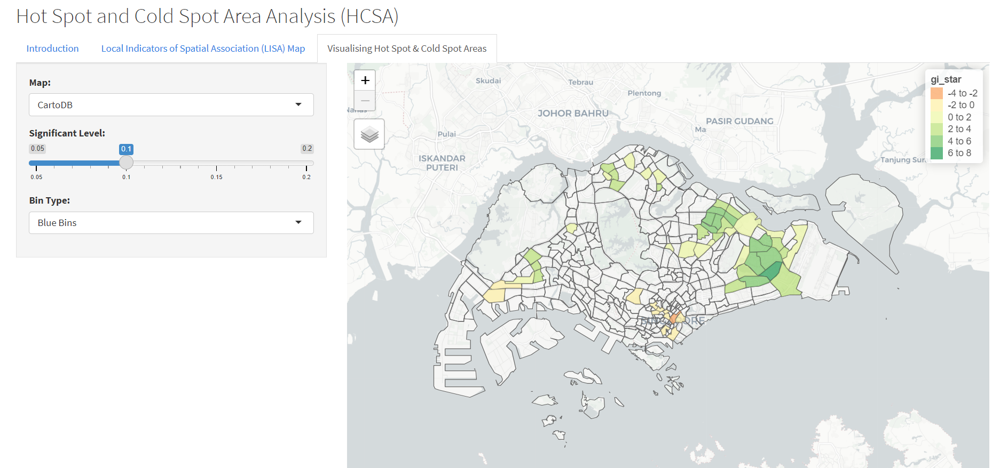

IS415-GAA Group 6: User Guide - Geospatial Analysis of Recycling Bin Distribution in Singapore
User Guide
RecycleSG Shiny App User Guide: You can access the Shiny application here.
Home
The section provides a summary of the project’s motivation and outlines the various types of geospatial analytic techniques employed in our Shiny App.
Exploratory Data Analysis
The Exploratory Data Analysis page features an interactive map showcasing the distribution of recycling bins across Singapore. Users can filter the data by the type of recycling bin (Blue Bin, E-Waste Bin, Incentive Bin and All) and visualize it alongside Singapore’s population density. Additionally, users have the option to switch between different map display types such as CartoDB, OpenStreetMap, and Esri.

Currently, there is no map available that allows the display of the different types of recycling bins in Singapore. However, the application enables users to visualize the distribution of Blue Bins, E-Waste Bins, and Incentive Bins across various locations in Singapore. Enhancing valuable insights into the accessibility and availability of different types of recycling facilities within the city-state.
Instruction:
Select the type of map you wish to view by clicking on the dropdown menu.
There are a total of 3 types of maps available: CartoDB, OpenStreetMap, and Esri.
Click on any of the map types to change the map display.
Select the type of recycling bin you wish to view by clicking on the dropdown menu.
There are a total of 4 types of recycling bins available: Blue Bin, E-Waste Bin, Incentive Bin and All Bins.
Click on any of the recycling bin types to filter the data and view the distribution of the selected recycling bin type.
Tick or untick the checkbox to view the population density in Singapore.
Hover over the markers on the map to view the location of the bins.
Use the zoom in and zoom out buttons to adjust the map view.
Click on the markers to view the details of the bins.
First-order Spatial Point Pattern Analysis
The First-order Spatial Point Pattern Analysis page comprises three subtabs: Introduction, Kernel Density Estimation, and Network Constrained KDE Analysis.
The Introduction subtab provides an overview of the first-order spatial point pattern analysis for recycling bin placement in Singapore. It delves into the significance of spatial point pattern analysis in identifying clustering patterns and spatial relationships among recycling bins. By leveraging this analytical technique, users can gain valuable insights into the distribution of recycling bins across Singapore.

The KDE (Kernel Density Estimation) subtab offers a detailed explanation of the KDE analysis for recycling bin placement in Singapore. By elucidating the theoretical underpinnings of KDE analysis, users can better understand the spatial distribution of recycling bins and identify areas with high and low bin density. This section not only highlights the benefits of KDE analysis but also provides practical guidance on its application in optimizing placement of recycling bins.

Instruction:
Select the type of bandwidth you wish to use by clicking on the dropdown menu.
There are a total of 2 types of bandwidth available: Fixed and Adaptive.
Click on any of the bandwidth types to change the KDE map display.
By selecting fixed bandwidth, you are provided with the different type of kernels and bandwidth to choose from.
There are a total of 4 types of kernels available: Quartic, Gaussian, Epanechnikov, and Disc.
There are a total of 4 types of bandwidth available: diggle, ppl, CvL and scott.
Click on any of the kernels and bandwidth to change the KDE map display.
Use the zoom in and zoom out buttons to adjust the map view.
The NetKDE (Network Constrained KDE) subtab within this user guide offers a comprehensive understanding of the NetKDE analysis for recycling bin placement in Singapore. By exploring the nuances of network-constrained KDE analysis, users can gain insights into the spatial distribution of recycling bins along road networks. This section not only elucidates the significance of NetKDE analysis but also provides practical guidance on leveraging this analytical technique to optimize placement of recycling bins effectively.

Instruction:
Select the type of bin you wish to view by clicking on the dropdown menu.
There are a total of 2 types of bins available: Blue Bin and E-Waste Bin.
Click on any of the bin types to filter the data and view the distribution of the selected bin type.
Select the area you wish to view by clicking on the dropdown menu.
There are a total of 25 areas available for selection.
Click on any of the areas to filter the data and view the distribution of the selected area.
Use the zoom in and zoom out buttons to adjust the map view.
Hover over the markers on the map to view the location of the bins.
Click on the markers to view the details of the bins.
Hot Spot and Cold Spot Area Analysis
The Hot Spot and Cold Spot Area Analysis page comprises three subtabs: Introduction, Local Indicators of Spatial Association (LISA) Analysis, and Visualisation of Hot Spot and Cold Spot Areas.
The introduction subtab offers a concise overview of hotspot and coldspot analysis for recycling bin placement in Singapore. It delves into exploring the clustering of bins and pinpointing areas with abundant bin placement, as well as those with minimal to no presence. By highlighting the potential benefits derived from employing this analytics technique, we can gain valuable insights to optimize waste management strategies effectively

The LISA (Local Indicators of Spatial Association) subtab in this user guide serves as a pivotal resource for understanding and interpreting the LISA map effectively. By offering a detailed explanation of LISA map interpretation, users gain insights into the spatial patterns and relationships regarding recycling bin placement across Singapore. This section not only elucidates the theoretical underpinnings of LISA analysis but also provides practical guidance on its application in real-world scenarios.

Moreover, the LISA subtab enhances user interaction and customization through an intuitive interactive map interface. This feature empowers users to tailor their exploration experience by adjusting various parameters, including the type of recycling bin, significance level, and map type, to align with their specific requirements and objectives. Additionally, users can select different categories for generating the map, such as mean, median, and pysal, allowing for nuanced analysis and comparison.
Instruction:
Select the type of map you wish to view by clicking on the dropdown menu.
There are a total of 3 types of maps available: CartoDB, OpenStreetMap, and Esri.
Click on any of the map types to change the map display.
Use the slider to adjust the significance level. The significance level ranges from 0.05 to 0.2.
Click on the slider and drag it to the desired significance level.
Select the type of recycling bin you wish to view by clicking on the dropdown menu.
There are a total of 3 types of recycling bins available: Blue Bin, E-Waste Bin and Incentive Bin.
Click on any of the recycling bin types to filter the data and view the distribution of the selected recycling bin type.
Select the type of category you wish to view by clicking on the dropdown menu.
There are a total of 3 types of categories available: Mean, Median and Pysal.
Click on any of the categories to change the LISA map display.
Use the zoom in and zoom out buttons to adjust the map view.
Hover over the area to view the value of the selected category.
Click on the area to view the details of the selected category.
The HCSA (Hotspot and Coldspot Analysis) subtab within this user guide offers a comprehensive understanding of interpreting the HCSA map. By delving into the nuances of hotspot and coldspot analysis, users gain insights into identifying areas of high and low activity regarding recycling bin placement in Singapore. This section not only elucidates the significance of these analytical techniques but also provides practical guidance on how to leverage the information gleaned from the HCSA map effectively.
 Furthermore, the HCSA subtab enhances user engagement by offering an interactive map interface. This feature empowers users to personalize their exploration experience by adjusting parameters such as the type of recycling bin, significance level, and map type. Whether users seek to analyze specific categories of recycling bins or explore different levels of significance, this interactive map caters to their diverse needs and preferences.
Instruction:
Select the type of map you wish to view by clicking on the dropdown menu.
There are a total of 3 types of maps available: CartoDB, OpenStreetMap, and Esri.
Click on any of the map types to change the map display.
Use the slider to adjust the significance level. The significance level ranges from 0.05 to 0.2.
Click on the slider and drag it to the desired significance level.
Select the type of recycling bin you wish to view by clicking on the dropdown menu.
There are a total of 3 types of recycling bins available: Blue Bin, E-Waste Bin and Incentive Bin.
Click on any of the recycling bin types to filter the data and view the distribution of the selected recycling bin type.
Use the zoom in and zoom out buttons to adjust the map view.
Hover over the area to view the value of GI*.
Click on the area to view the details of the selected area.